Idioma
Español
English
Inicio
Nosotros
Clases
Eventos
Propuestas
Bienestar equino
Galería
Contacto
Error 404
Esta flecha no dio en el blanco
La página que buscás no existe o cambió de lugar.
Page not found.
Volver al inicio
Go to home page